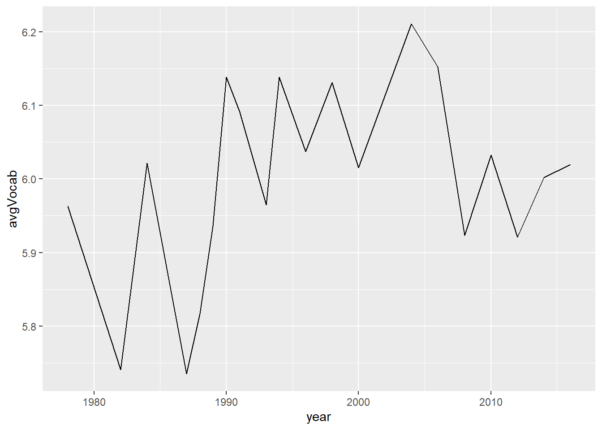
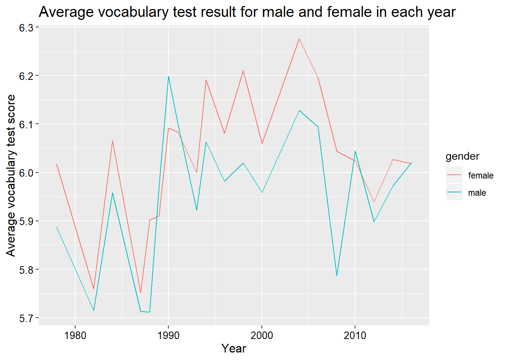
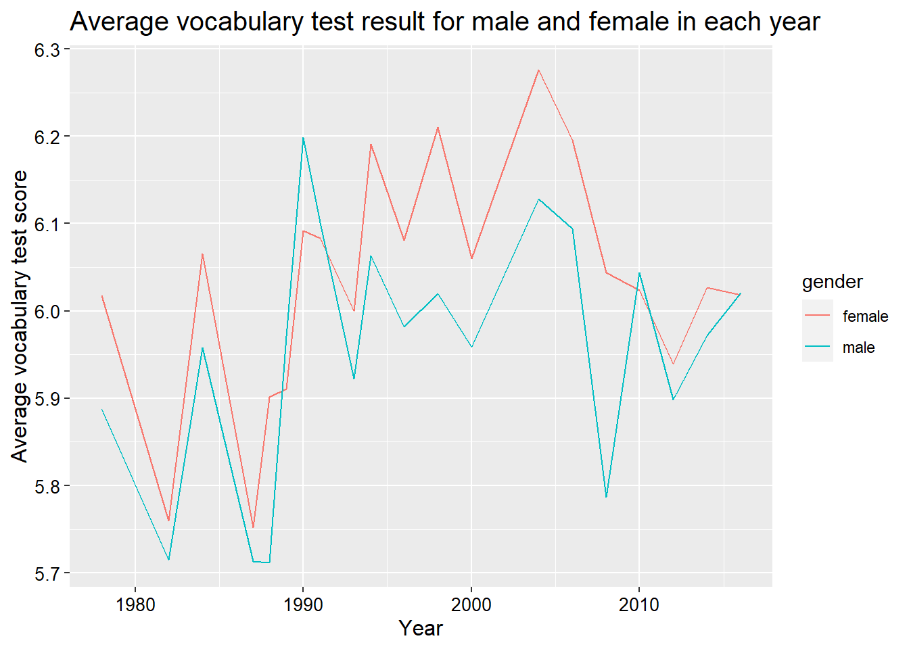
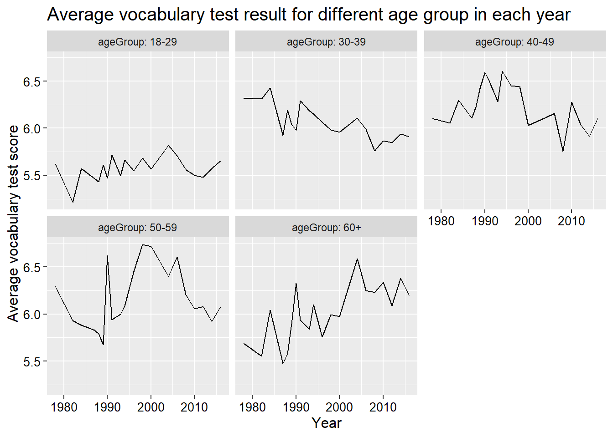
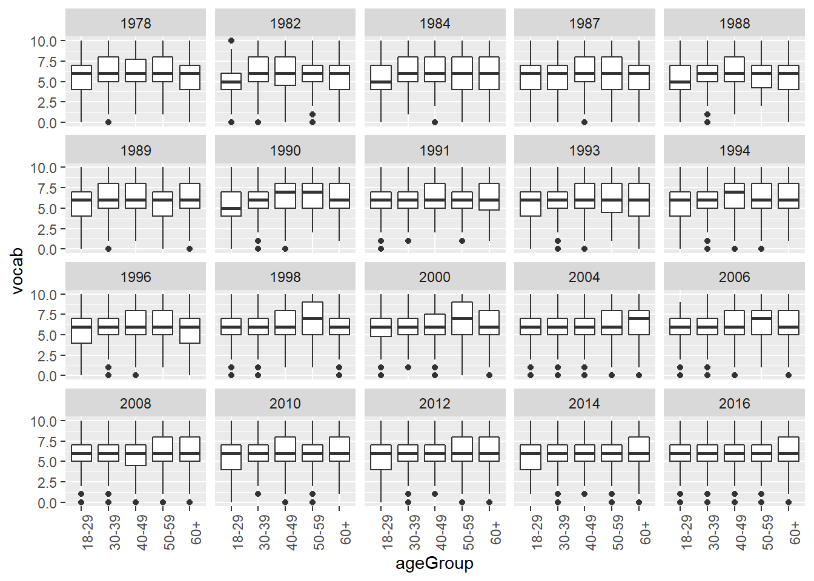
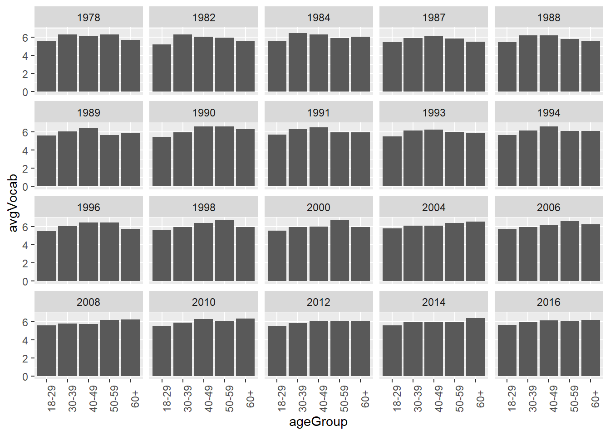

Chapter 8 Exploratory Data Analysis
We are going to use what we have learnt so far to do some exploratory data analysis, which is also the practice for data manipulation and visualization.
8.1 Introduction of the dataset and research question
The dataset we used here is from the General Social Survey (GSS) carried out by the National Opinion Research Center of the University of Chicago. The dataset shows the results of the vocabulary tests for several years. It contains eight variables (Arel-Bundock 2019). Their descriptions are listed below.
| Variable | Descriptions |
|---|---|
| year | The test year |
| gender | Gender |
| nativeBorn | Was the respondent born in the US? |
| ageGroup | Grouped age of the respondent |
| educGroup | Grouped education level of the respondent |
| vocab | Number of words out of 10 correct on a vocabulary test |
| age | Age of the respondent in years |
| educ | Years of education of the respondent |
Our research question is how do the average vocabulary test results change over time?
Let’s get start. We first library the packages we need for this task.
8.2 Data munipulation
We could the import tool to import our dataset and copy the code.
## Warning: Missing column names filled in: 'X1' [1]## Parsed with column specification:
## cols(
## X1 = col_double(),
## year = col_double(),
## gender = col_character(),
## nativeBorn = col_character(),
## ageGroup = col_character(),
## educGroup = col_character(),
## vocab = col_double(),
## age = col_double(),
## educ = col_double()
## )There are some warning messages when we import the dataset. The reason for this warning message is that we did not specify the type of the variables. Therefore, R tries to give every variable a type based on its own understanding of the data.
Let’s check the dataset to see what it looks like.
## # A tibble: 5 x 9
## X1 year gender nativeBorn ageGroup educGroup vocab age educ
## <dbl> <dbl> <chr> <chr> <chr> <chr> <dbl> <dbl> <dbl>
## 1 1978. 1978 female yes 50-59 12 yrs 10 52 12
## 2 1978. 1978 female yes 60+ <12 yrs 6 74 9
## 3 1978. 1978 male yes 30-39 <12 yrs 4 35 10
## 4 1978. 1978 female yes 50-59 12 yrs 9 50 12
## 5 1978. 1978 female yes 40-49 12 yrs 6 41 12Except the first variable, all other variables seem to be imported in the right type. Since the first variable is not useful for our data analysis, we do not need to care about it.
Then, based on the initial research questions, we need to calculate the average vocabulary test results for each year. We apply the group_by() function here.
year_vocab <- GSSvocab %>%
group_by(year) %>%
summarize(avgVocab = mean(vocab, na.rm = T)) # indicate na.rm = T to deal with missing value
head(year_vocab, 5)## # A tibble: 5 x 2
## year avgVocab
## <dbl> <dbl>
## 1 1978 5.96
## 2 1982 5.74
## 3 1984 6.02
## 4 1987 5.74
## 5 1988 5.828.3 Data visualization
Then, we apply ggplot() to visualize the dataset year_vocab we have just generated.

For a complete plot, we have to add more infomation such as title, x label, and y label, etc.
ggplot(year_vocab, aes(x = year, y = avgVocab)) +
geom_line() +
labs(title = 'Average vocabulary test result for each year',
y = 'Average vocabulary test score',
x = 'Year') +
theme(plot.title = element_text(size = 20),
axis.text = element_text(size = 10, colour = 'black'),
axis.title = element_text(size = 12))
8.4 Combine them togethor
We could put those codes together.
GSSvocab %>%
group_by(year) %>%
summarize(avgVocab = mean(vocab, na.rm = T)) %>%
ggplot(aes(x = year, y = avgVocab)) + # we do not put name of the dataset here
geom_line() +
labs(title = 'Average vocabulary test result for each year',
y = 'Average vocabulary test score',
x = 'Year') +
theme(plot.title = element_text(size = 20),
axis.text = element_text(size = 10, colour = 'black'),
axis.title = element_text(size = 12))
8.5 More examples
Let’s make the research more challenging. Let’s study the topic that how do the average vocabulary test results for male and female change over time?
year_gender_vocab <- GSSvocab %>%
group_by(year, gender) %>%
summarize(avgVocab = mean(vocab, na.rm = T))
head(year_gender_vocab, 5)## # A tibble: 5 x 3
## # Groups: year [3]
## year gender avgVocab
## <dbl> <chr> <dbl>
## 1 1978 female 6.02
## 2 1978 male 5.89
## 3 1982 female 5.76
## 4 1982 male 5.71
## 5 1984 female 6.07ggplot(year_gender_vocab, aes(x = year, y = avgVocab, col = gender)) +
geom_line() +
labs(title = 'Average vocabulary test result for male and female in each year',
y = 'Average vocabulary test score',
x = 'Year') +
theme(plot.title = element_text(size = 15),
axis.text = element_text(size = 10, colour = 'black'),
axis.title = element_text(size = 12))
Again, we could put them together.
GSSvocab %>%
group_by(year, gender) %>%
summarize(avgVocab = mean(vocab, na.rm = T)) %>%
ggplot(aes(x = year, y = avgVocab, col = gender)) +
geom_line() +
labs(title = 'Average vocabulary test result for male and female in each year',
y = 'Average vocabulary test score',
x = 'Year') +
theme(plot.title = element_text(size = 15),
axis.text = element_text(size = 10, colour = 'black'),
axis.title = element_text(size = 12))
8.6 More more example
We could also do the same thing to each age group and even plot them in different plots with facet_wrap() function.
GSSvocab %>%
group_by(year, ageGroup) %>%
filter(!is.na(ageGroup)) %>% # delete the the obs with missing values in ageGroup
summarize(avgVocab = mean(vocab, na.rm = T)) %>%
ggplot(aes(x = year, y = avgVocab)) +
geom_line() +
facet_wrap(~ageGroup, labeller = label_both) +
labs(title = 'Average vocabulary test result for different age group in each year',
y = 'Average vocabulary test score',
x = 'Year') +
theme(plot.title = element_text(size = 15),
axis.text = element_text(size = 10, colour = 'black'),
axis.title = element_text(size = 12))
Or boxplots.
GSSvocab %>%
filter(!is.na(ageGroup)) %>%
ggplot(aes(x = ageGroup, y = vocab)) +
geom_boxplot() +
facet_wrap(~year) +
theme(axis.text.x = element_text(angle = 90))## Warning: Removed 1319 rows containing non-finite values (stat_boxplot).
Or bar plots.
GSSvocab %>%
filter(!is.na(ageGroup)) %>%
group_by(ageGroup, year) %>%
summarize(avgVocab = mean(vocab, na.rm = T)) %>%
ggplot(aes(x = ageGroup, y = avgVocab)) +
geom_col() +
facet_wrap(~year) +
theme(axis.text.x = element_text(angle = 90))
References
Arel-Bundock, Vincent. 2019. “Data from the General Social Survey (Gss) from the National Opinion Research Center of the University of Chicago.” November 11, 2019. https://vincentarelbundock.github.io/Rdatasets/doc/carData/GSSvocab.html.